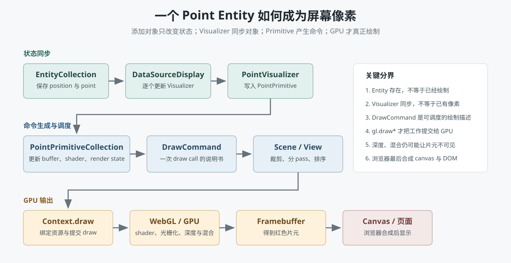

Rendering Pipeline
Cesium 完整渲染路径：从 Viewer 到 GPU
这一章回答一个核心问题：你在 Cesium 里添加一个对象后，它到底如何一步步变成屏幕上的像素？
一句话总览
业务描述：Viewer / Entity / Primitive / 3D Tiles
-> 状态同步：clock.tick -> DataSourceDisplay -> Visualizer
-> 帧调度：requestAnimationFrame -> CesiumWidget.render -> Scene.render
-> 命令生成：PrimitiveCollection.update -> DrawCommand
-> 命令调度：culling -> pass 分类与排序 -> executeCommand
-> 底层绘制：DrawCommand.execute -> Context.draw -> WebGL
-> GPU 管线：顶点着色 -> 光栅化 -> 片元着色 -> 深度/混合
-> 输出：framebuffer -> canvas -> 浏览器页面
1. Viewer：应用入口
`Viewer` 是最常用的入口。它帮你创建 canvas、CesiumWidget、Scene、Camera、Clock、DataSourceDisplay、EntityCollection、ImageryLayerCollection 等。业务代码通常写：
const viewer = new Cesium.Viewer("container");
viewer.entities.add({
position: Cesium.Cartesian3.fromDegrees(116.39, 39.9),
point: { pixelSize: 10, color: Cesium.Color.RED }
});这时你添加的是 Entity。Entity 还不是 WebGL 绘制命令，它只是业务描述。
2. Entity 到可渲染对象
Entity API 是高级抽象。`viewer.entities` 实际指向 `dataSourceDisplay.defaultDataSource.entities`。添加 Entity 主要是改变业务状态，并不会在这一行代码里直接调用 WebGL。随后 `clock.tick()` 触发 CesiumWidget 的时钟更新，`DataSourceDisplay.update(time)` 再调用与图形类型对应的 Visualizer。
viewer.entities.add(entity)
-> defaultDataSource.entities
-> clock.tick() / onTick
-> CesiumWidget._onTick()
-> DataSourceDisplay.update(time)
-> PointVisualizer / BillboardVisualizer / GeometryVisualizer / ModelVisualizer
-> 更新对应的底层渲染对象这里不能把所有 Entity 简化为同一种 Primitive：普通点走 `PointVisualizer -> PointPrimitive`；贴地的点可能改用 Billboard；多边形通常经 `GeometryVisualizer` 和 GeometryUpdater；模型则进入 Model 管线。高级 API 最终汇入同一个命令系统，但中间转换器不同。
如果你直接用 `scene.primitives.add(new Primitive(...))`，则跳过 Entity 层，直接进入底层渲染对象。
3. 一帧是谁启动的
默认渲染循环由浏览器的 `requestAnimationFrame` 驱动。`CesiumWidget.render()` 先初始化帧，再推进 Clock；Clock 的 onTick 监听器会更新 DataSourceDisplay；完成业务状态同步后才调用 `Scene.render(time)`。这比简单写成“Scene.render 调用 initializeFrame”更准确。
requestAnimationFrame(render)
-> CesiumWidget.resize()
-> CesiumWidget.render()
-> scene.initializeFrame()
-> clock.tick()
-> CesiumWidget._onTick()
-> dataSourceDisplay.update(time)
-> scene.render(currentTime)
-> preUpdate
-> 判断 requestRenderMode 下是否需要新帧
-> preRender
-> private render(scene)
-> updateFrameState()
-> context.beginFrame()
-> updateAndExecuteCommands()
-> resolveFramebuffers()
-> context.endFrame()
-> postRender`Scene` 是渲染调度中心，而 `CesiumWidget` 是默认帧循环的宿主。启用 `requestRenderMode` 后，`Scene.render()` 仍可能被调用来更新状态，但只有检测到相机、时间、资源或显式 render request 变化时才真正提交新帧。
4. 把一个红色点追到底
现在沿着前面的北京红点追踪具体类。以下链路针对 `heightReference: NONE` 的普通 Point；贴地 Point 会因高度贴合需求使用 Billboard 路径。
viewer.entities.add({ point, position })
-> EntityCollection 保存 Entity
-> DataSourceDisplay.update(time)
-> PointVisualizer.update(time)
-> EntityCluster.getPoint(entity)
-> PointPrimitiveCollection 中新增/复用 PointPrimitive
-> PointVisualizer 写入 position / color / pixelSize
Scene 开始绘制
-> executeCommandsInViewport()
-> updateAndRenderPrimitives()
-> scene.primitives.update(frameState)
-> EntityCluster.update(frameState)
-> PointPrimitiveCollection.update(frameState)
-> 写入或更新 GPU vertex buffer
-> 准备 ShaderProgram、RenderState、VertexArray
-> new DrawCommand()
-> command.primitiveType = POINTS
-> frameState.commandList.push(command)需要抓住两个时间点：`PointVisualizer.update()` 负责把 Entity 属性同步到 PointPrimitive；`PointPrimitiveCollection.update(frameState)` 才负责把这些状态整理成 GPU 数据和 DrawCommand。因此“对象已经存在”和“本帧已经有可执行命令”是两件事。
| 源码位置 | 这一层回答什么 |
|---|---|
| CesiumWidget.js | 默认帧循环、Clock、DataSourceDisplay 和 Scene 如何连接。 |
| DataSourceDisplay.js | 每次 update 如何遍历各 DataSource 的 Visualizer。 |
| PointVisualizer.js | Entity.point 如何映射为 PointPrimitive 或 Billboard。 |
| PointPrimitiveCollection.js | 点数据如何进入 vertex buffer 并形成 DrawCommand。 |
5. Primitive.update 产生命令
Primitive 的职责不是马上调用 WebGL，而是在 update 阶段把自己转换成渲染命令，放入 `frameState.commandList`。
Primitive.update(frameState)
-> 准备 geometry / vertex array
-> 准备 appearance / shader
-> 准备 renderState / uniformMap
-> 创建 DrawCommand
-> frameState.commandList.push(drawCommand)这就是 Cesium 很重要的设计：对象先产生命令，Scene 再统一排序、分 pass、执行命令。
6. DrawCommand 封装一次绘制
`DrawCommand` 可以理解为“一次 WebGL draw call 的完整说明书”。它通常包含：
- vertexArray：顶点数据。
- shaderProgram：顶点/片元着色器。
- uniformMap：每帧传给 shader 的变量。
- renderState：深度测试、混合、剔除等状态。
- pass：opaque、translucent、overlay、pick 等渲染阶段。
- boundingVolume：视锥裁剪和调试。
DrawCommand {
vertexArray,
shaderProgram,
uniformMap,
renderState,
pass,
boundingVolume
}7. Scene 统一执行命令
Scene 会对 commandList 做裁剪、排序、按 pass 执行。opaque 和 translucent 通常不能随便混着画，因为透明物体需要特殊排序和混合。
frameState.commandList
-> View.createPotentiallyVisibleSet(scene)
-> 按视锥、boundingVolume 和遮挡条件筛选
-> 按 GLOBE / CESIUM_3D_TILE / OPAQUE / TRANSLUCENT / OVERLAY 等 pass 组织
-> executeCommands()
-> executeCommand()
-> command.execute(context, passState)8. Renderer、GPU 与浏览器合成
Renderer 层把 WebGL 对象包装成 Cesium 内部对象：`Context`、`ShaderProgram`、`VertexArray`、`Texture`、`Framebuffer`、`RenderState`。这样上层不需要到处直接操作 WebGL API。
DrawCommand.execute(context, passState)
-> Context.draw(drawCommand, passState)
-> bind ShaderProgram / VertexArray
-> apply RenderState
-> upload automatic + custom uniforms
-> gl.drawElements(...) 或 gl.drawArrays(...)
-> GPU 执行 vertex shader
-> 图元装配与光栅化
-> GPU 执行 fragment shader
-> scissor / depth / stencil / blend
-> 写入 framebuffer
-> WebGL canvas
-> 浏览器 compositor 与 DOM 控件合成
-> 屏幕像素对这个红点而言，命令的 `primitiveType` 是 `POINTS`，通常落到 `gl.drawArrays`。draw call 只是向 GPU 提交绘制工作；真正决定最终像素的还有 shader、深度测试、混合、framebuffer 以及浏览器最后的页面合成。
9. Globe / Terrain / Imagery 的特殊路径
地球不是一个普通三角形。Globe 会管理地形瓦片、影像图层、瓦片加载、LOD、裁剪、shader 混合。逻辑上仍然会走“对象产生 command，Scene 执行 command”的路径，只是它内部的 tile pipeline 更复杂。
Scene.globe
-> Globe.update()
-> QuadtreePrimitive
-> terrain tile selection
-> imagery layer texture
-> terrain/imagery draw commands10. 3D Tiles 的特殊路径
3D Tiles 会先做 tileset traversal，根据相机选择可见 tile，再加载 glTF/mesh/metadata，最后生成 draw commands。
Cesium3DTileset.update()
-> traversal / screen space error
-> request visible tiles
-> prepare tile content
-> push draw commands11. 为什么这样设计
- Entity 友好：业务代码容易写。
- Primitive 高效：性能敏感场景可以跳过高级抽象。
- Command 可调度：Scene 能统一排序、裁剪、分 pass、做 picking。
- Renderer 可复用：WebGL 状态管理集中，不污染高层对象。
- 适合海量数据：Terrain、Imagery、3D Tiles 都可以用各自的 tile pipeline 产生命令。
12. 自定义 shader 插在哪里
自定义 shader 不是绕开这条路径，而是插入到路径中的某个层级：`CustomShader` 插入 Model/3D Tiles 的 shader pipeline；`Material/Fabric` 插入 Appearance 的材质片段；`PostProcessStage` 插入 Scene 渲染完成后的屏幕空间 pass；底层自定义 Primitive 则直接创建 `DrawCommand`。
CustomShader / Material / Appearance / PostProcessStage
-> 影响 ShaderProgram 或后处理 shader
-> 进入 DrawCommand / post-process command
-> Renderer 统一执行详细例子见 Cesium 自定义着色器。
和 Pi Agent 的类比
| Pi Agent | Cesium | 共同点 |
|---|---|---|
| 用户 prompt | 业务 Entity/Primitive | 都是高层意图。 |
| AgentSession | Viewer/Scene | 都是运行时调度中心。 |
| toolCall | DrawCommand | 都是“下一步要执行什么”的结构化命令。 |
| 工具执行 | Renderer/WebGL 执行 | 真正落地动作在底层执行。 |
| AgentEvent | frameState/commandList | 中间状态让系统可观察、可调度。 |
源码阅读入口
- `packages/widgets/Source/Viewer/Viewer.js`：带完整 UI 的应用入口。
- `packages/engine/Source/Widget/CesiumWidget.js`：canvas、默认帧循环、Clock 与 DataSourceDisplay。
- `packages/engine/Source/DataSources/DataSourceDisplay.js`：DataSource 与 Visualizer 的更新入口。
- `packages/engine/Source/DataSources/PointVisualizer.js`：Point Entity 的具体转换器。
- `packages/engine/Source/Scene/PointPrimitiveCollection.js`：点的 GPU buffer 与命令生成。
- `packages/engine/Source/Scene/Scene.js`：渲染调度中心。
- `packages/engine/Source/Scene/Primitive.js`：Primitive 如何产生命令。
- `packages/engine/Source/Renderer/DrawCommand.js`：绘制命令。
- `packages/engine/Source/Renderer/Context.js`：WebGL 上下文封装。
- `packages/engine/Source/Scene/Globe.js`：地球、地形和影像入口。
- `packages/engine/Source/Scene/Cesium3DTileset.js`：3D Tiles 入口。
官方参考
源码复核：CesiumJS `main` 分支｜最后复核：2026-09-14。内部私有函数不是稳定 API，升级版本后应重新核对函数名和调用顺序。